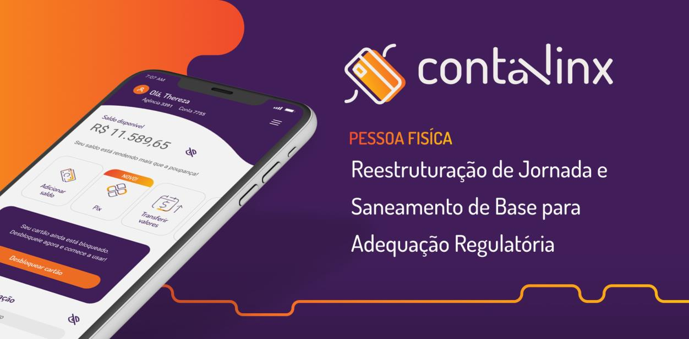
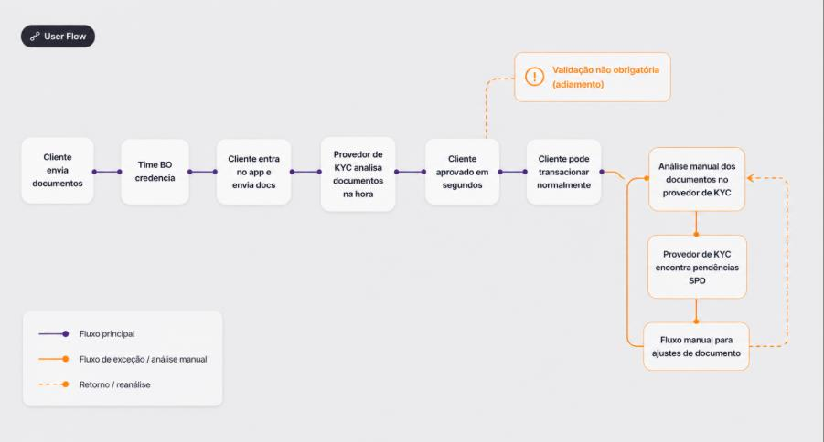
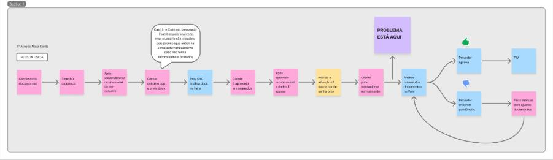
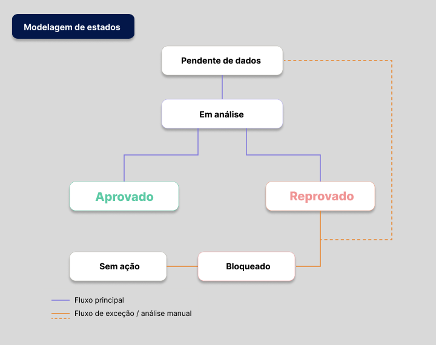
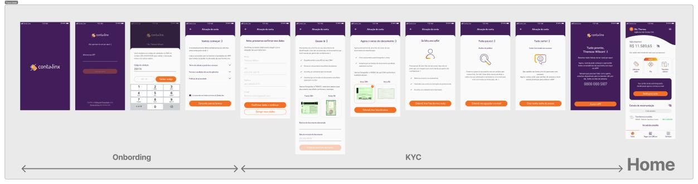
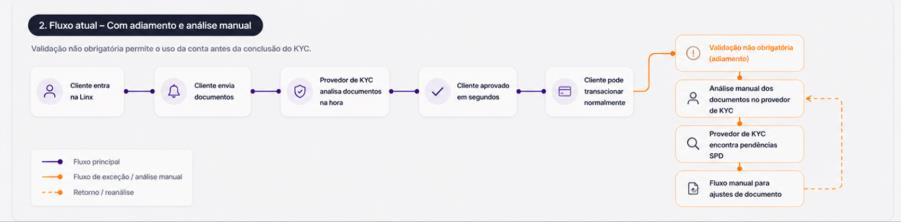
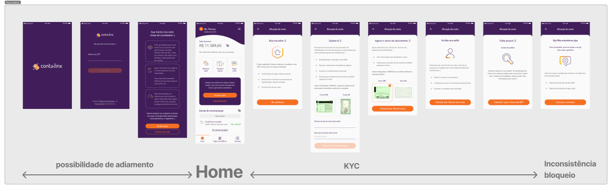
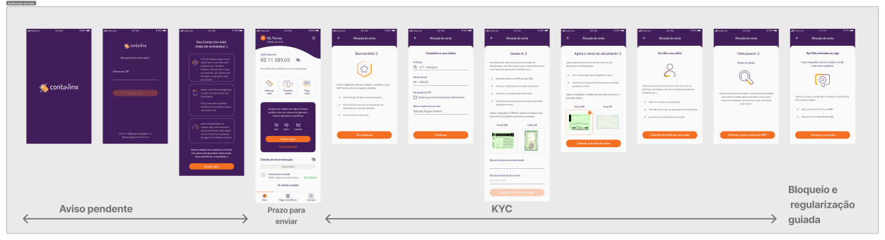

i.
Forçar ação no momento de maior engajamento
O envio de documentos passou a acontecer imediatamente após o login.
→ reduz adiamento e aumenta a taxa de conclusãoReestruturação de jornada e saneamento de base para adequação regulatória da Conta Linx (Stone Co.), equilibrando conformidade e experiência do usuário.

O projeto surgiu a partir de uma exigência do Banco Central do Brasil, que determinava que toda a base de clientes da Conta Linx deveria estar com dados cadastrais e documentação atualizados.
O cenário envolvia:
Além disso, o desafio não era apenas técnico — era necessário garantir adesão dos usuários a uma ação obrigatória (KYC) sem comprometer a experiência.
"A conta podia ser utilizada sem validação completa, permitindo adiamento do KYC e gerando inconsistência na base."


Estruturei a experiência considerando:
Desenhei um sistema claro de estados — cada um com mensagem específica, próxima ação clara e feedback do sistema.

KYC automático reduz fricção na entrada, mas exige controle contínuo da base.
A automação desloca a complexidade para o pós-onboarding, tornando essencial a sanitização e o controle de estados.
O envio de documentos passou a acontecer imediatamente após o login.
→ reduz adiamento e aumenta a taxa de conclusãoElimina a fuga do fluxo — não existe mais um caminho de adiamento.
→ conta nasce com o KYC como etapa obrigatóriaAviso, prazo e bloqueio — em sequência, sem choque inicial.
→ cria senso de urgência de forma gradualO que fazer, até quando e qual o impacto — explícito em todos os pontos.
→ reduz ambiguidade e aumenta a açãoCada status da conta possui interface, mensagem e próximo passo claro.
→ previsibilidade dentro do produtoUsuários novos e legados seguem a mesma lógica de regularização.
→ elimina o retrabalho de manter dois padrões



Nota: o produto foi descontinuado posteriormente por decisão estratégica, mas o projeto estruturou uma abordagem consistente de validação e controle de risco.